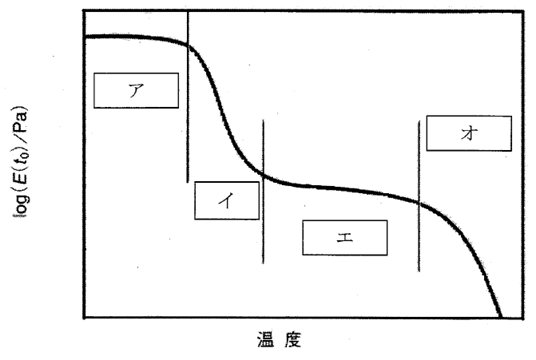

平成27年度 問18 高分子化学
次の記述の【 】に入る語句の組合せとして最も適切なものはどれか。
下図は時間 t0 における十分に分子量が大きい非晶性高分子固体の引張緩和弾性率E（t0）の温度依存性の模式図である。【 ア 】では高分子鎖のミクロブラウン運動は凍結し、弾性率は1～数GPaの値となる。温度が上昇すると凍結されていた分子鎖のミクロブラウン運動が開始し、【 イ 】へ到達する。【 ア 】から【 イ 】への変化が【 ウ 】である。さらに温度が上昇すると弾性率が数MPa程度で温度に依存しない【 エ 】となる。さらに温度が上昇すると高分子鎖の絡み合いがほぐれ、分子鎖が激しく運動し、弾性率も低下する【 オ 】となる。

| 選択肢 | ア | イ | ウ | エ | オ | |
|---|---|---|---|---|---|---|
|
①
|
ゴム状平坦領域 | 流動領域 | ガラス転移 | ガラス状領域 | 流動領域 | |
|
②
|
ゴム状平坦領域 | 流動領域 | 融解 | ガラス状領域 | 転移領域 | |
|
③
|
ガラス状領域 | 転移領域 | 融解 | ゴム状平坦領城 | 流動領域 | |
|
④
|
ガラス状領域 | 流動領域 | ガラス転移 | ゴム状平坦領域 | 転移領域 | |
|
⑤
|
ガラス状領域 | 転移領域 | ガラス転移 | ゴム状平坦領域 | 流動領域 | |
正答
⑤ ア：ガラス状領域、イ：転移領域、ウ：ガラス転移、エ：ゴム状平坦領域、オ：流動領域
問題に表示されたグラフは材料の粘弾性の温度依存性を評価したものです。
温度が低い領域はガラス状態領域となり高分子鎖の運動が制限されています（ア）。
更に温度を上げるとガラス転移領域を経由（イ）してゴム領域（ゴム状平坦領域）へ移ります（エ）。これをガラス転移と呼びます（ウ）。
ゴム領域よりも温度を上げていくと流動領域となり分子鎖が激しく運動するようになります（オ）。